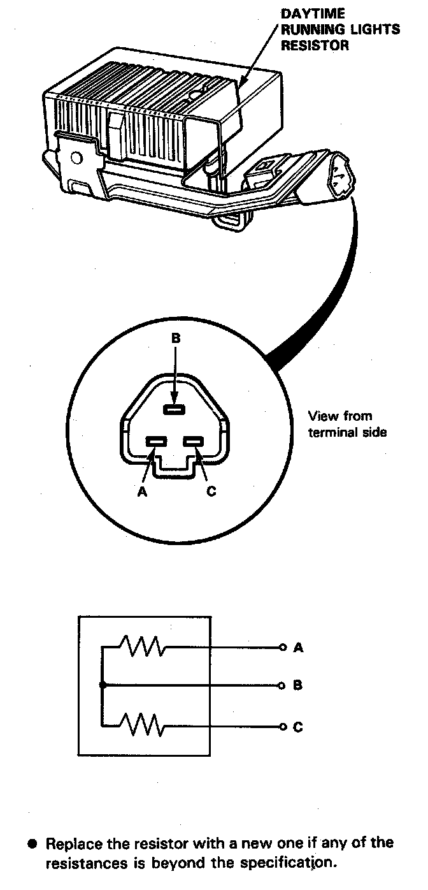

Daytime Running Lamp Resistor: Testing and Inspection
Daytime Running Lamps Resistor Test

CAUTION: The daytime running lights resistor becomes very hot during the use of the daytime running lights; do not touch it or the attaching hardware immediately after the lights have been turned off.
1. Disconnect the 3-P connector from the resistor.
2. Check for resistance between each of the resistor terminals (A and C) and the power terminal (B).
Resistance: 1 Ohms +/- O.O5 Ohms